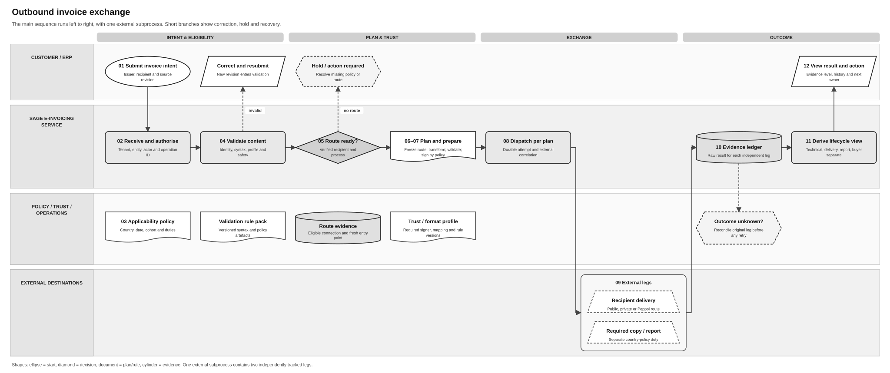

Invoice Sending Logical Feature Specification
Solution Summary · Sequence and Reuse Assessment · Feature landing page
Revision overview
This separate view makes the scenarios and OUT activities in SPEC-SEI-007 easier to review. Existing IDs and safeguards retain their meanings. The current flow is one invoice for a business or its authorised accountant; broader portfolio controls remain conditional. It adds the transitional PDF behaviour and local-product generation decision in PRD-SEI-246. The predecessor remains unchanged and selected for its stable Confluence page.
This draft states the proposed behaviour for the companion set. Exact contracts, component allocation, implementation coverage and OUT-Q01–03 remain open. The supplied FR guide informs engineering reuse in SPEC-SEI-024; it does not replace Spain requirements.
1 Purpose, actors and boundary
The business needs the correct invoice sent through the permitted route, with clear results and safe recovery. The ERP owns issuance. A direct business or authorised accountant uses the same single-invoice journey for the represented business. No batch coordinator is required. The supplied FR guide establishes a per-invoice submission, not bulk accountant sending. Portfolio and accounting-handoff proposals remain separate under OUT-Q02. A client relationship, login or dataset ID alone cannot grant action authority. OUT-R11–14; REF-BASE/PRODUCT; INT-SND01.
Use the shared glossary. Product requirements retain their source authority. Requirements below do not allocate new services or endpoints.
2 Scenarios and observable outcomes
Existing acceptance IDs also identify the review scenarios. Section 6 supplies their checks.
| Scenario | Condition and required outcome | Activities |
|---|---|---|
| OUT-A01/02 Draft or final data needs work | Return owned issues. A changed final candidate invalidates affected preparation; already-issued content uses governed correction. | OUT-01–08/11 |
| OUT-A03 Eligible private route | Plan private recipient delivery and only the separately required public copy. Qualify the sender-to-recipient platform path; public issuance/interconnection does not need another copy. | OUT-09–13; OUT-SPFE-R01 |
| OUT-A04/05 Public route or unresolved lookup | Proven absence selects Spain public recipient delivery. Failed, stale or ambiguous evidence holds dispatch. | OUT-09/10 |
| OUT-A06 Mapping or trust failure | Hold before external execution; preserve the exact failed representation and next action. | OUT-08/11 |
| OUT-A07/08 Partial or lost result | Preserve known success and reconcile only the uncertain original action. | OUT-12–15 |
| OUT-A13/14 Business or one-client accountant | Apply current action authority and any required approval to the exact revision. Return the eligible action owner for missing evidence. | OUT-02/03/05/08/12/15 |
| OUT-A16 Withdrawal; OUT-A15 only if portfolio scope is enabled | Stop affected new work and retain earlier effects for authorised recovery. Any separately enabled portfolio keeps item outcomes independent. | OUT-08/12–15 |
| OUT-PDF-A01–03 Transitional PDF | Apply the product rule, obtain the local product's matching PDF and qualify recipient delivery independently of public submission. | OUT-08/10–15; OUT-PDF-R01/02 |
3 Process and activity order


This existing detail diagram explains route holds, validation correction and action-specific recovery. It does not define the physical issuance/copy boundary. The ordered activities below govern that boundary: final preparation precedes dependent ERP issuance; a required copy is coordinated with issuance, independently of private delivery success. OUT-SPFE-R01; SPFE-S02 Article 4.
The original activity numbers retain their meanings. OUT-06 therefore appears after final preparation in execution order.
| Activity | Actor, condition, required behaviour and safe result |
|---|---|
| OUT-01 Create draft | ERP captures complete invoice business facts and a source revision. Exact draft fields remain a contract gate. |
| OUT-02 Submit draft | The caller supplies authorised business scope, input identity and revision. Save a recoverable request before processing. Same identity/input returns existing work; changed input conflicts. Deny unsupported or inaccessible scope without revealing another client. |
| OUT-03 Prepare | For that business and actor, check applicability, action authority, profile and source data. Early route evidence is guidance with source/time; it cannot freeze the final route. |
| OUT-04 Decide draft | Return issues, limitations, owner and next action without issuing or sending. Preserve prior results when correction creates a new revision. |
| OUT-05 Review | ERP and eligible actor apply the OUT-Q01 approval policy to the invoice revision/purpose. Save a missing-decision request before notification. Verify current eligibility and version before resuming; stale, refused, expired or conflicting decisions retain the hold. An authorised automatic rule records its actor, policy and evidence. |
| OUT-07 Submit final candidate | ERP supplies stable planned identity/date and exact final data before coordinated issuance. A material change invalidates the plan. Qualified already-issued paths retain actual issuance evidence; a late required copy remains a nonconformance/recovery case. Duplicate final identity/hash resumes existing work; conflicting input requires an owned revision decision. |
| OUT-08 Final checks | Recheck current business/action authority, entitlement, required approval, applicability, exact representation and trust. Unknown evidence holds dependent work. If issued content is defective, return the legal/ERP correction owner without changing it. |
| OUT-09 Lookup | Resolve the recipient's authoritative destination for the correct environment, document/process and time. PRIVATE_READY needs operational eligibility; PROVEN_NONE needs successful authoritative absence. FAILED, STALE, AMBIGUOUS and UNSUPPORTED hold dispatch. Refresh or obtain approved evidence; a timeout cannot select public fallback. |
| OUT-10 Plan | Freeze the invoice/revision, route and evidence, profiles/files, mapping/trust versions and required independent actions. Distinguish the sender's platform, recipient's platform and actual public issuance/interconnection use before deciding the required copy. A material pre-execution change creates a new plan version. Earlier transmitted actions retain their original context. |
| OUT-11 Prepare/send intent | Preserve business meaning during transformation. Validate final target bytes, then apply any approved signature/seal. Retain exact final bytes/hash and recoverable action intent before transmission. Reconcile an uncertain protected signing operation before repeating it. Failure holds external execution. |
| OUT-06 ERP issuance | ERP issues only after dependent final preparation, through the qualified OUT-Q03 boundary. Bind actual issued identity/revision/time. Cancellation before issuance can close safe pending work; afterwards it cannot erase the issued invoice. |
| OUT-12 Execute actions | Recheck current authority/readiness before each new protected execution. Execute only the action in the frozen plan, with its own identity and recorded attempt. Coordinate a required copy with issuance under OUT-SPFE-R01. Preserve completed actions when another is held, rejected or unknown. |
| OUT-13 Record outcomes | Retain raw results and actual evidence level for each action. After a possible external effect, reconcile the original route, identity and payload before retry. Record confirmed success once; repeat proven absence only under a qualified safe contract. Unresolved evidence stays owned. Rebuild a lost local result from intent and reliable observation. |
| OUT-14 Derive views | Hand evidence to the lifecycle owner. Preserve raw source meaning and separate preparation, issuance, technical admission, delivery, copy/reporting and buyer states. Out-of-order events cannot erase later evidenced facts. |
| OUT-15 Show result | Product returns permitted current results, evidence time/freshness, limitations and next owner/action. Portfolio reads and counts recheck access. Accounting handoff has its own result; its failure cannot resend recipient delivery. |
Transitional PDF behaviour
The product rule owns applicability and local-product generation responsibility. These requirements develop that rule through the existing final-check, plan, execution and result activities. A PDF is a readability companion, not the faithful public copy. RD238-T2; REF-PDF-DECISION.
| ID | Condition, required behaviour and recovery |
|---|---|
| OUT-PDF-R01 | Before planned sending, resolve whether the PDF is required, exempt or not applicable under the product rule. Retain the applicable cohort/date and any recipient exception evidence. When required, the local product generates a readable PDF for the exact final invoice revision and supplies its file reference/hash. Missing, mismatched or unsafe content returns an owned readiness hold. A changed invoice requires a matching PDF; already-issued facts cannot be silently changed. |
| OUT-PDF-R02 | Plan the required PDF's delivery to the recipient through a qualified private attachment path or a separate permitted channel. Exclude the PDF from every public-platform request, including MIME attachments. Record its delivery evidence and unresolved obligations separately from structured-invoice delivery and public-copy submission. Upload success is not recipient delivery. A PDF failure cannot repeat a successful structured-invoice action; preserve any issued/transmitted work and reconcile the affected PDF operation. |
These rules also apply when the structured invoice uses the public route. SEI024 section 3.3 assesses file transport; it does not transfer PDF generation to the API or DTS. Exact channel timing, completion evidence and release handling need the selected-channel qualification below. RD238-T2.
Exceptions, errors and recovery
Use the evidence of a possible external effect to select the next step. An error label alone cannot establish that repeating a request is safe. These decisions apply to the existing activities for both the business user and an authorised accountant; they do not require batch sending.
| Condition | Required decision and next owner | Acceptance / contract gate |
|---|---|---|
| Invalid draft, changed final revision or missing approval | ERP or eligible approver resolves the affected revision/decision. Recheck dependent evidence before resuming. An issued invoice follows its governed correction path. | OUT-A01/02/09/13/14; OUT-Q01. |
| Authority withdrawn or selected connection not ready | Hold new protected execution. Identity or the setup owner resolves the exact business/action dependency. Retain prior effects for currently authorised recovery; do not reconnect or change route automatically. | OUT-A14/16; SND-G02/06. |
| Lookup fails, is stale or does not establish eligible private delivery | Routing owner obtains qualified evidence. No public fallback from a failure. Before any external effect, a material change needs a new plan; possible or completed effects retain their original route. | OUT-A03–05/11/12. |
| Repeated send, double click or concurrent requests | Return the existing operation for the same identity/input; conflicting input requires an owned correction decision. API/execution owners prevent another effect and qualify replay scope/window. | OUT-A18; SND-G04. |
| Some files upload; another expires, fails scanning or has an unknown upload result | Keep the invoice resource, file bindings and successful uploads. Product/API owners use only qualified resume, renewal or observation behaviour. Do not create another invoice to obtain upload URLs or silently replace issued content. | OUT-A06/20; OUT-PDF-A03; SND-G03/04. |
| Send response is lost, or external success cannot be saved locally | Reconcile the original action from retained intent, route, input and external evidence. If the invoice ID is unknown and no discovery contract exists, API/Operations keeps an owned hold. A failed read is not proven absence. | OUT-A08/20; SND-G04. |
| ERP issuance/copy handoff has a partial or lost result | ERP and the action owner establish actual issuance and each original action's result. Preserve known issuance; hold uncertain dependent work. Do not automatically reissue, withdraw or repeat the whole handoff. | OUT-SPFE-A01; OUT-A21; OUT-Q03. |
| Private delivery succeeds; public copy is rejected or unknown | Recover only the copy action under the applicable correction/reconciliation rule. The public-action owner retains delivery success and returns the outstanding copy obligation. | OUT-A07; OUT-SPFE-A03. |
| Public copy succeeds; private delivery is rejected or unknown | Retain the copy result. Integration/Operations resolves only recipient delivery. A private failure cannot trigger automatic public recipient delivery or another public copy. | OUT-A19; OUT-09/10/13. |
| Required PDF fails after a structured action succeeds | Local Product and the qualified PDF-channel owner resolve only the affected PDF work. Preserve invoice/copy results and keep the recipient obligation visible. | OUT-PDF-A03; OUT-A19/20; SND-G08. |
| Definite rejection concerns issued data, original/copy identity or a duplicate | Classify the source result and use OUT-SPFE-R02/03 with the ERP/Compliance owner. Technical rejection and buyer commercial rejection remain separate facts; neither is a generic resend instruction. | OUT-A09/10; OUT-SPFE-A02/03. |
| Event is missing, repeated, out of order, inconsistent or for another scope | Verify source, business/environment and invoice/action correlation. Lifecycle/API owners retain raw evidence, deduplicate under the qualified contract and observe authoritative detail. A failed refresh changes freshness, not the last evidenced result. Do not restart sending because a notification is absent. | OUT-A10/22; SND-G05. |
A completed FR processing attempt reports ERROR while current status remains Submitted |
Product reads the relevant history[] outcome/error and retains that attempt's final result. Where INT-ERR01 assigns retry to the platform, observe that original work and use its code-specific support action; do not issue a fresh invoice POST/key or resend completed actions. API/Operations must qualify any later attempt and its correlation. |
OUT-A08/10/20/22; SND-G04/05/07; INT-ERR01. |
| Cancellation or refusal races with execution | Close only pending work proven safe to stop. If an effect may have occurred, report cancellation/recovery pending and reconcile through the currently authorised owner. Already-issued facts and completed actions remain; no undocumented cancel/withdraw endpoint is assumed. | OUT-A16/21; OUT-Q01/03; SND-G04. |
| Temporary outage, rate limit or caller authentication failure | API/Operations first establishes the affected action's effect boundary. Retry only proven safe work under the selected contract; otherwise reconcile or hold. Restoring caller access does not restore withdrawn business authority. Retry intervals, limits and escalation targets remain to qualify. | OUT-A08/16/20; SND-G04/07. |
The product view identifies the affected invoice/action, known versus unknown result, retained successes, next action and current owner (OUT-15). Resume only after evidence resolves the blocked check and current authority permits the next action. Escalation or manual case assignment is not proof of completion. API codes and contract evidence remain in SEI024 section 3.2.
The FR attempt-error assessment preserves exact codes and retry ownership. A technical send error cannot generate Spain REJECTION, payment or report-cancellation messages. The separate Annex II supplement concerns lifecycle reporting; final BOE Annex II remains authoritative for legal rules. INT-ERR01; SPFE-S22; SPFE-S02 Annex II.
4 Shared controls and Spain binding
OUT-I01–13 and OUT-R01–14 retain their meanings in the predecessor invariants and requirement register. The activity table is this set's authoritative behaviour statement; the register provides traceability rather than another restatement.
Protect tenant, business and test/production isolation on reads and changes. Keep private keys, secrets and sensitive invoice content out of events, logs and customer errors. Prevent concurrent execution of the same invoice revision/action. Preserve source/final files, policy versions and evidence under an approved retention policy; no duration or performance target is invented here.
| Existing source-binding ID | Spain behaviour / recovery boundary | Evidence |
|---|---|---|
| OUT-SPFE-R01 | Qualify the responsible copy sender and actual issuance/copy boundary. Public issuance/interconnection needs no extra copy; queue acceptance is not proof of simultaneous submission. Lost or partial effects retain actual issuance evidence and the original action. | SPFE-S02 Articles 3.4, 4.1–4.3; OUT-Q03. |
| OUT-SPFE-R02 | Distinguish existing original, existing copy and permitted withdrawal. A copy-to-original transition needs an authorised traceable withdrawal procedure. Never use withdrawal or a fresh send as default duplicate/unknown recovery. | SPFE-S02 Article 5.5; SPFE-S03 section 6.3; SPFE-S10. |
| OUT-SPFE-R03 | A defective copy and defective original need different correction paths. Preserve correspondence to the issued original; no silent repair or repetition of successful private delivery. | SPFE-S02 Article 5.6. |
| OUT-SPFE-R04 | Retain independent request/item admission results, locator and receipt evidence. Qualify batch and authority rules before activation. Use exceptional outage handling only when its source conditions are established; retain the predecessor's calendar rule. | SPFE-S02 Articles 5.4/5.7; SPFE-S03 section 6.2; SPFE-S16. |
Reuse classification: revision binding, independent outcomes and reconciliation are reusable design patterns. Identity, profiles, mapping, trust and provider contracts need country binding. Spain public fallback and copy/correction rules are country-specific. Existing build coverage is unknown. SPEC-SEI-024 records source capabilities, local changes, owners and qualification evidence. DTS remains the preferred transformation candidate, subject to Spain qualification. REF-PRODUCT.
5 Decisions and technical analysis boundary
| Gate | Decision / evidence and accountable roles |
|---|---|
| OUT-Q01 | Product, Identity and Spain Compliance qualify invoice approval purpose, eligible roles, manual/automatic policy and change/withdrawal rules. |
| OUT-Q02 | Separate optional scope: Product/API, Architecture and Operations qualify portfolio coordination and accounting handoff before enabling them. They are not prerequisites for a business or accountant sending one invoice. |
| OUT-Q03 | ERP, E-Invoice and Spain Compliance qualify stable final identity, actual issuance/copy coordination, authority races and partial/lost results. No atomic distributed transaction or reservation endpoint is approved here. |
| Existing unnumbered gates | ERP/API own draft/final fields and rendering; Product/Compliance own whether early lookup blocks issuance and the legal correction path; Routing/Integration own authoritative source/freshness/eligibility; Trust/Security own signing; API/provider owners qualify replay, query and acknowledgement semantics. |
| PDF channel qualification | Local Product, API, Integration and Spain Compliance qualify attachment or separate-channel delivery, timing, scan/error recovery, completion evidence and release handling. Local-product PDF generation is decided; these delivery contracts remain open under SND-G08. |
Proposed interaction IDs OUT-INT-01–11 and data IDs OUT-D01–12 remain in SPEC-SEI-007 Part 3. They are technical analysis, not approved component allocations. Annex withdrawal requirements OUT-AXC-R01–07 and positive/negative checks stay at their original field traceability.
6 Functional acceptance
These are required checks, not executed implementation tests. Existing IDs and meanings are preserved; detailed requirement/interface/data links remain in SPEC-SEI-007 Part 4.
| Checks | Required evidence |
|---|---|
| OUT-A01/02 | Invalid draft causes no issuance/send; changed final data cannot use stale preparation or approval. Issued defects return the governed correction path. |
| OUT-A03/04/05 | Eligible private, proven-none public and failed/stale lookup produce distinct plans or hold. A published but ineligible private point cannot release dispatch. |
| OUT-A06 | Transformation preserves business meaning; mapping/validation/trust failure prevents external action. Record the reused DTS build, profile and rule evidence. |
| OUT-A07/08 | Successful delivery survives unknown copy outcome; lost responses reconcile the original action without repeating success. |
| OUT-A09/10 | Keep issued original and its correction history. Acknowledgement or processing completion cannot imply buyer acceptance. |
| OUT-A11/12 | Isolate Spain rules from another country. A new route/operator cannot rewrite an earlier plan or create a second executor after possible transmission. |
| OUT-A13/14 | Direct business and one-client accountant use current action authority and exact-revision approval. Preparation-only or view-only access cannot approve/sign/send. |
| OUT-A16; OUT-A15/17 for separately enabled scope | Relationship/authority loss stops affected new work. If portfolio/accounting scope is enabled, preserve item isolation and permitted counts; its failures cannot repeat recipient delivery. These optional checks do not require a bulk API for the core flow. |
| OUT-A18 | Repeat and race the same final request across callers/restarts. Same input returns existing work; changed input conflicts. Only one invoice/action execution is permitted under the qualified identity and concurrency contract. OUT-02/07/10/12; SND-G04. |
| OUT-A19 | Public copy succeeds while private delivery fails or is unknown; then exercise PDF-only failure. Preserve every known result and recover only the affected action. No automatic public fallback, duplicate copy or complete-invoice resend. OUT-09–15; OUT-PDF-R02. |
| OUT-A20 | Lose the POST response before retaining its ID; interrupt or expire individual file uploads; fail observation during an outage. Keep original intent and good file bindings. Missing discovery/resume evidence produces an owned hold, not a new invoice or an unsupported success/absence claim. INT-SND01; SND-G03/04. |
| OUT-A21 | Race cancellation or authority loss with execution and ERP issuance. Distinguish safe pre-effect closure from possible/completed effects; preserve issuance and reconcile through a current authorised owner. Qualify partial/lost copy-handoff results under OUT-Q03. No cancellation endpoint is inferred. |
| OUT-A22 | Supply missing, duplicate, late, contradictory and wrong-business/environment events; fail the detail refresh. Verify source/correlation, retain raw evidence and the last evidenced result with freshness. Apply only qualified ordering/reconciliation; no duplicate send or unsupported state regression. INT-SND01; SND-G05. |
| OUT-SPFE-A01 | Prove the issuance/copy boundary for qualifying private and recipient-issued journeys, identity/authority changes and partial/lost results. Cover public → private, private → private, private → public and public → public with qualified route evidence. No extra copy after public use. SEI024 §2.2 records API coverage and open handoffs. SPFE-S02 Articles 3.4/4; OUT-SPFE-R01. |
| OUT-SPFE-A02/03 | Exercise existing original/copy, legal withdrawal and defective-copy versus defective-original branches. SPFE-S02 Articles 5.5–5.6; OUT-SPFE-R02/03. |
| OUT-SPFE-A04 | Exercise partial batch admission and qualifying versus ordinary outages. Preserve admitted items and keep disputed size/CSV mapping open. SPFE-S02 Article 5.4/5.7; SPFE-S03; OUT-SPFE-R04. |
| OUT-PDF-A01 | Exercise required, expressly exempt and non-applicable PDFs at the product rule's cohort/date boundaries. Local Product supplies a readable file for the exact revision; missing exception evidence cannot bypass a required file. RD238-T2; OUT-PDF-R01. |
| OUT-PDF-A02 | Exercise private attachment delivery and public structured-invoice delivery with a separate recipient PDF channel. No public-platform request carries the PDF. Preserve distinct upload, recipient and public-copy results. RD238-T2; OUT-PDF-R02. |
| OUT-PDF-A03 | Exercise missing, mismatched, unsafe, failed and uncertain PDF delivery. Return an owner and preserve successful structured actions. An authorised accountant for one client uses the same checks without a batch request. OUT-PDF-R01/02; INT-SND01. |
REF Source references
Final published law governs legal duties. Technical files support only their stated fields and behaviour. Examples and English extracts are reading aids. Product requirements and proposed recovery controls have separate authority.
| ID | Original source / version and exact locator | Supported claim and limit |
|---|---|---|
| INT-ERR01 | FR error-handling extract, received 22 October 2026, revision/build unknown; Processing and error fields, sending/status dictionaries, Recovery interpretation | History-only error/outcome fields, final attempt and code-specific platform retry/support guidance. No permission for consumer-side resend or proof of Spain implementation. |
| SPFE-S22 | Separate Annex II, received 22 October 2026; §§1–4 pp. 4–14 and list L1 p. 15 | Eight lifecycle communications and actor/field evidence. Release/version/supersession unverified; final SPFE-S02 Annex II remains legal baseline. See comparison. |
| REF-BASE | SPEC-SEI-007, updated 13 October 2026; Parts 1–4 | Existing OUT IDs, design, decisions and detailed traceability; not deployment evidence. |
| REF-PDF-DECISION | PRD-SEI-246 product rule, updated 22 October 2026; agreed boundaries and PDF product rule | User-recorded local-product PDF generation responsibility and single-invoice scope. Delivery channel implementation remains unqualified. |
| RD238-T2 | Original published RD 238/2026, published 31 March 2026, checked 22 October 2026; transitional provision 2(1)–(2), final provision 4 | PDF applicability, recipient exception and exclusion from public submission. Does not allocate generation to a Sage component or establish an attachment API. |
| INT-SND01 | FR sending evidence, received 22 October 2026; prerequisites, Submission design requirements and steps 1–5 | One-invoice submission, attachment upload and event/detail evidence. Complete replay, resume, cancellation and ordering contracts are missing; no bulk accountant contract or Spain qualification is established. |
| REF-PRODUCT | PRD-SEI-246, 22 October 2026, Agreed business boundaries and validation; PRD-SEI-223, BR1–14, FR1–16/43–46; PRD-SEI-212, scope; PRD-SEI-231, delegated access | Canonical product sources and DTS direction. Draft product scope is not implementation approval. |
| SPFE-S02 | BOE PDF, final Order HAC/1028/2026, published 5 October 2026; Articles 3.4–3.6, 4, 5.4–5.7; official text | Copy, withdrawal, correction and admission/outage duties. Physical coordination and timing proof need qualification. |
| SPFE-S03 | Catalogue PDF, draft 0.1.0, 9 October 2026; sections 6.2–6.3, pp. 10–12 | Submission batches, per-invoice authority, disputed 5120-byte limit and limited withdrawal. Conflicts do not override final law. |
| SPFE-S01 | Invoice annex PDF, supplied 13 October 2026; BT-ES-1 p. 4 and withdrawal pp. 26–27 | Copy marker and withdrawal fields. Not a complete implementation mapping. |
| SPFE-S16 / SPFE-S10 | SendInvoice / CancelInvoice, supplied 13 October 2026; operation, binding, ports | PRE transport and opaque business attachments; no generic replay permission. |
| REF-FIELDS | Field ledger, source snapshot 13 October 2026; AXC-01–07 and exact BOE row locators; original BOE XML | Existing field inventory and acceptance IDs; actual mappings/rules remain unqualified. |
| REF-EVIDENCE | RES-SEI-002, source register and SPFE-Q03/07/08/13/15/18; manifest | Original-source inventory and unresolved conflicts, not field-mapping or production readiness. |